일반기계기사 (2007-09-02 기출문제)
1과목: 재료역학
1. 한 변의 길이가 4cm인 정사각형 단면의 봉이 있다. 온도를 40℃ 상승시켜도 길이가 늘어나지 않도록 하는데 160kN의 힘이 필요하다. 이 봉의 열팽창계수(/℃)는 얼마인가? (단, 탄성계수 E = 200 GPa이다.)
- 9.5×10-6
- 10.5×10-6
- 11.5×10-6
- 12.5×10-6
(정답률: 55%)

2. 다음 중 포아송 비(Poisson’s ratio)에 관한 설명으로 틀린 것은?
- 포아송 비는 인장시험에서 인장축에 수직인 방향으로의 수축과 관계 있다.
- 탄성계수와 전단탄성계수를 알면 포아송 비를 구할 수 있다.
- 탄성 변형시 체적이 변하지 않는 재료의 포아송 비는 0.25이다.
- 실존하는 재료의 포아송 비는 0부터 0.5 사이의 범위에 있다.
(정답률: 39%)
3. 균일 단면을 가지는 수직 강봉 하단에 하중 P가 작용하고 있다. 이 때 봉의 전신장량은 얼마인가? (단, 강봉의 단면적은 A, 길이는 L, 비중량은 γ, 그리고 탄성계수는 E이다.)
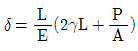
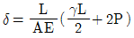
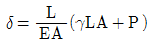
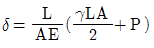
(정답률: 46%)
4. 그림과 같은 2축 응력상태에서 σx=200MPa, σy=-300MPa이 작용할 때, 최대 전단응력의 크기는 몇 MPa인가?
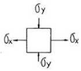
- 250
- 450
- 650
- 850
(정답률: 68%)
5. 그림과 같이 순수굽힘 상태에 있는 AB구간의 보에서 굽힘에 의해 중립면의 곡률은 얼마인가? (단, 보의 탄성계수는 E이고, 단면 2차모멘트는 I이다.)
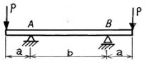
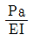
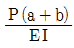
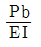
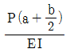
(정답률: 22%)
6. 그림과 같은 단순보의 지점 반력(RA, RB)은 몇 N인가?
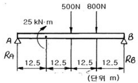
- RA=50, RB=1350
- RA=-250, RB=1550
- RA=-150, RB=1450
- RA=-50, RB=1350
(정답률: 47%)
7. 그림과 같은 원형단면의 외팔보 2개의 지름의 비가 d1:d2 = 5 : 6이고, 그 밖의 치수와 재료는 똑같다. 이 두 보가 똑같은 집중하중을 받고 있을 때, 이들 보 속에 저장되는 변형에너지의 비 U1:U2는?
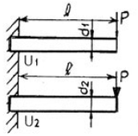
- 63:53
- 62:52
- 64:54
- 53:63
(정답률: 25%)
8. 폭 × 높이 = 4cm x 8cm인 직사각형 단면이고 길이가 1m인 외팔보의 자유단에 집중하중 30 kN이 작용할 때 보의 처짐의 최대값은 몇 cm인가? (단, 탄성계수 E = 210 GPa이다.)
- 1.50
- 2.79
- 4.50
- 11.16
(정답률: 50%)
9. 그림과 같이 외팔보의 중앙에 집중하중 W가 작용할 때, 최대처짐을 나타내는 식은? (단, 보의 탄성계수는 E이고, 단면 2차모멘트는 1이다.)
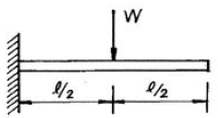
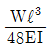
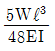
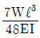
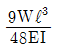
(정답률: 45%)
10. 무게 100N인 물체가 두 개의 줄 AC, BC에 의해서 동일 평면상에서 평형을 이루고 있다. 줄 BC에 걸리는 장력은 몇 N 인가?
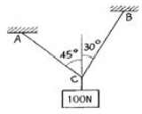
- 51.8
- 62.5
- 73.2
- 89.3
(정답률: 52%)
11. 평면 응력상태에 있는 어느 점에서 응력이 σx=σy=σ, σz=τxy=τyz=τzx=0일 때 모어(Mohr)의 원으로 나타내면?
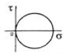
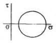
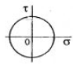
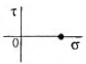
(정답률: 25%)
12. 다음 중 주평면(主平面)의 성질을 옳게 설명한 것은?
- 주평면에는 최대 수직 응력만이 작용한다.
- 주평면에는 최대 전단 응력만이 작용한다.
- 주평면에는 최대, 최소의 수직 응력만이 작용한다.
- 주평면에는 전단 응력과 수직 응력이 모두 작용한다.
(정답률: 30%)
13. 다음 중 체적계수(bulk modulus)를 나타낸 식은? (단, E는 탄성계수, G는 전단탄성계수, v는 포아송비이다.)
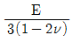
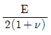
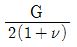
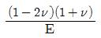
(정답률: 36%)
14. 탄성 계수 E = 200GPa, 좌굴 응력 σB = 320MPa인 강재기둥에 오일러(Euler) 공식을 적용할 수 있는 한계 세장비는? (단, n은 양단지지 상태에 따른 좌굴 계수이다.)
- 62.5√n
- 78.5√n
- 85.5√n
- 90.5√n
(정답률: 54%)
15. 양단 고정보의 중앙에 집중 하중 W가 작용할 때 굽힘 모멘트 선도(BMD)는?
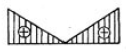
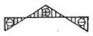
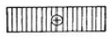
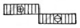
(정답률: 40%)
16. 안지름 80cm의 얇은 원통에 내압 1MPa이 작용할 때 원통의 최소 두께는 몇 mm인가? (단, 재료의 허용응력은 80MPa이다.)
- 2.5
- 5
- 8
- 10
(정답률: 49%)
17. 바깥지름 8cm, 안지름 6cm의 속이 빈 축에 7000N∙m의 비틀림 모멘트가 작용하고 있다. 이 때 발생하는 최대 비틀림 응력을 구하면 몇 MPa인가?
- 43.8
- 53.8
- 63.8
- 101.9
(정답률: 46%)
18. 지름이 60mm인 연강축이 있다. 이 축의 허용 전단응력은 40 MPa이며 단위길이당 허용 회전각도는 1.5°이다. 연강의 전단 탄성계수를 80GPa이라 할 때 이 축의 최대 허용 토크 T는 몇 N∙m인가?
- 696
- 1696
- 2664
- 3664
(정답률: 39%)
19. 그림과 같이 길이가 1m, 단면적이 1cm2인 막대의 B점이 벽에서 0.5mm 만큼 떨어져 있다. 온도가 50℃ 만큼 상승하였을 때 B점이 벽에 닿지 않기 위한 외력 P의 최소값은? (단, 재료의 탄성계수는 E=200GPa, 선형 열팽창계수는 α=1.5×10-5/℃이다.)
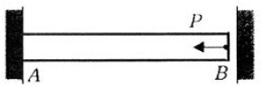
- 5 kN
- 10 kN
- 15 kN
- 20 kN
(정답률: 24%)
20. 아래 그림에서 전단력의 최대값은?
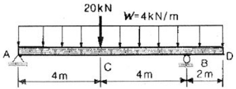
- 11 kN
- 25 kN
- 27 kN
- 35 kN
(정답률: 40%)
2과목: 기계열역학
21. 이상기체의 내부에너지 및 엔탈피는?
- 압력만의 함수이다.
- 체적만의 함수이다.
- 온도만의 함수이다.
- 온도 및 압력의 함수이다.
(정답률: 50%)
22. 분자량 28.5인 어떤 완전가스가 압력 200kPa, 온도 100℃에 있어서 갖는 비체적은? (단, 일반기체상수 = 8.314 kJ/kmol K이다.)
- 약 0.545 m3/kg
- 약 3.334 m3/kg
- 약 5.587 m3/kg
- 약 6.666 m3/kg
(정답률: 58%)
23. 기체가 0.3 MPa 일정압력 하에 8m3에서 4m3까지 마찰 없이 압축되면서 동시에 500 kJ의 열을 외부에 방출하였다면, 내부에너지(kJ)의 변화는 얼마나 되겠는가?
- 약 700
- 약 1700
- 약 1200
- 약 1300
(정답률: 30%)
24. 200m의 높이로부터 250kg의 물체가 땅으로 떨어질 경우 일을 열량으로 환산하면 약 몇 kJ인가?
- 117
- 79
- 203
- 490
(정답률: 44%)
25. 온도 200℃, 압력 500kPa, 비체적 0.6m3/kg의 산소가 정압하에서 비체적이 0.4m3/kg으로 되었다면, 변화 후의 온도는?
- 42℃
- 55℃
- 315℃
- 437℃
(정답률: 44%)
26. 그림과 같은 카르노사이클의 1,2,3,4점에서의 온도를 T1, T2, T3, T4라 할 때 이 사이클의 효율은 어떻게 표시되겠는가?
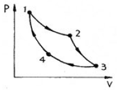
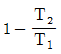
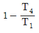
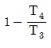
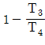
(정답률: 38%)
27. 열병항발전시스템에 대한 설명으로 올바른 것은?
- 증기 동력 시스템에서 전기와 함께 공정용 또는 난방용 스팀을 생산하는 시스템이다.
- 증기 동력 사이클 상부에 고온에서 작동하는 수은 동력 사이클을 결합한 시스템이다.
- 가스 터빈에서 방출되는 폐열을 증기 동력 사이클의 열원으로 사용하는 시스템이다.
- 한 단의 재열 사이클과 여러 단의 재생 사이클을 복합한 시스템이다.
(정답률: 23%)
28. 어떤 보일러에서 발생한 수증기를 열원으로 사용하면 온도 T1= 350℃에서 매 시간 Q1= 60000kJ의 열을 낼 수 있다. 이 수증기를 고열원으로 하고 또 T2= 50℃의 냉각수를 저열원으로 하는 가역 열기관 카르노 사이클(Carnot cycle)의 출력은 약 몇 kW인가?
- 5.82
- 6.69
- 8.03
- 14.3
(정답률: 40%)
29. 내부에너지가 40kJ, 절대압력이 200kPa, 체적이 0.1m3, 절대온도가 300K인 계의 엔탈피는?
- 60 kJ
- 240 kJ
- 42 kJ
- 80 kJ
(정답률: 47%)
30. 물 10kg을 1기압 하에서 20℃로부터 60℃까지 가열할 때 엔트로피의 증가량은? (단, 물의 정압 비열은 4.18 kJ/kgK이다.)
- 9.78 kJ/K
- 5.35 kJ/K
- 8.32 kJ/K
- 41.8 kJ/K
(정답률: 55%)
31. 500℃와 20℃의 두 열원 사이에 설치되는 열기관이 가질 수 있는 최대의 이론 열효율은 다음 중 어느 것에 가장 가까운가?
- 48%
- 58%
- 62%
- 96%
(정답률: 50%)
32. 온도 150℃, 압력 0.5MPa의 공기 0.2kg이 압력이 일정한 과정에서 원래 체적의 2배로 늘어난다. 이 과정에서의 일은? (단, 공기의 기체 상수는 0.287 kJ/kgK이다.)
- 12.3 kJ
- 18.5 kJ
- 20.5 kJ
- 24.3 kJ
(정답률: 42%)
33. 어떤 시스템이 100 kJ의 열을 받고, 150 kJ의 일을 하였다면 이 시스템의 엔트로피는?
- 증가했다.
- 감소했다.
- 변하지 않았다.
- 시스템의 온도에 따라 증가할 수도 있고 감소할 수도 있다.
(정답률: 32%)
34. 밀폐된 실린더 내의 기체를 피스톤으로 압축하여 300 kJ의 열이 발생하였다. 압축일량이 400 kJ이라면 내부에너지 증가는?
- 100 kJ
- 300 kJ
- 400 kJ
- 700 kJ
(정답률: 33%)
35. 준평형 과정으로 실린더 안의 공기를 100 kPa, 300 K 상태에서 400 kPa까지 압축한다. 이 압축 과정 동안 압력과 체적의 관계는 PVn=const(n=1.3)이다. 공기의 정적비열은 Cv=0.717kJ/kgK, 기체상수(R)=0.288 kJ/kgK이다. 단위질량당 일과 열의 전달량은?
- 일 = -108.2 kJ/kg, 열 = -27.11 kJ/kg
- 일 = -108.2 kJ/kg, 열 = -189.3 kJ/kg
- 일 = -125.4 kJ/kg, 열 = -27.11 kJ/kg
- 일 = -125.4 kJ/kg, 열 = -189.3 kJ/kg
(정답률: 36%)
36. 자동차에서 에어컨을 가동할 때 차량 밑으로 물이 떨어졌다. 이 물은 주로 어디서 발생했는가?
- 응축기
- 증발기
- 팽창밸브
- 압축기
(정답률: 27%)
37. 냉동능력 5 냉동톤인 냉동기의 성능계수가 2, 냉동기를 구동하는 가솔린 엔진의 열효율이 20%, 가솔린의 발열량이 43000 kJ/kg 일 경우, 냉동기 구동에 소요되는 가솔린의 소비율은 약 얼마인가? (단, 1 냉동톤은 약 3.52 kW이다.)
- 1.28 kg/h
- 2.12 kg/h
- 3.68 kg/h
- 4.85 kg/h
(정답률: 32%)
38. 다음 그림과 같이 다수의 추를 올려놓은 피스톤이 끼워져 있는 실린더에 들어 있는 가스를 계로 생각한다. 최초압력이 300 kPa이고, 초기체적은 0.⑤m3이다. 피스톤을 고정하여 체적을 일정하게 유지하고 압력이 200 kPa로 떨어질 때까지 계에서 열을 제거할 때 이때의 일은?
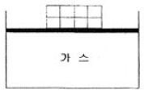
- 0 kJ
- 5 kJ
- 10 kJ
- 15 kJ
(정답률: 4%)
39. 다음은 물질의 열역학 성질에 관한 설명이다. 이 중에서 미시적 관점의 설명은 어느 것인가?
- 밀폐공간의 기체를 가열하면 압력이 증가한다.
- 같은 온도에서 액체보다 증기가 더 많은 에너지를 갖고 있다.
- 압력이 증가하면 액체의 끓는 온도가 증가한다.
- 고체를 가열하면 격자의 진동이 활발해 진다.
(정답률: 34%)
40. 오토(Otto) 사이클에 관한 설명 중 틀린 것은?
- 가솔린기관의 공기표준사이클이다.
- 연소과정을 등적가열과정으로 간주한다.
- 압축비가 클수록 효율이 높다.
- 열효율은 작업기체의 종류와 무관하다.
(정답률: 50%)
3과목: 기계유체역학
41. 길이 150m의 배가 8m/s의 속도로 항해한다. 배가 받는 조파 저항을 연구하는 경우, 길이 1.5m의 기하학적으로 닮은 모형의 속도는 몇 m/s인가?
- 12
- 80
- 1
- 0.8
(정답률: 40%)
42. 압력강하 △P, 밀도 ρ, 길이 L, 유량 Q에서 얻을 수 있는 무차원수는?
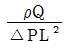
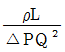
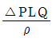
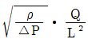
(정답률: 48%)
43. 벽면에 평행한 방향의 속도 u만이 있는 유동장에서 전단응력을 τ, 점성 계수를 μ, 벽면으로부터의 거리를 y로 표시하면 뉴튼의 점성법칙은 어떻게 쓸 수 있는가?
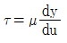
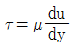
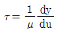
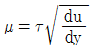
(정답률: 56%)
44. 수력기울선(Hydraulic Grade Line)의 설명으로 가장 적당한 것은?
- 에너지선보다 위에 있어야 한다.
- 항상 수평이 된다.
- 위치 수두와 속도 수두의 합을 나타낸다.
- 위치 수두와 압력 수두의 합을 나타낸다.
(정답률: 48%)
45. 어떤 탱크에 유체를 가득 채우고, 수직축을 중심으로 일정한 각속도로 회전시킨다. 탱크 밑면에서의 압력은 어떻게 변화하는가?
- 회전축으로부터의 거리의 제곱에 따라 감소한다.
- 회전축으로부터의 거리에 따라 직선적으로 증가한다.
- 회전축으로부터의 거리에 따라 직선적으로 감소한다.
- 회전축으로부터의 거리의 제곱에 따라 증가한다.
(정답률: 13%)
46. 수평 원관 속을 흐르는 유체의 층류 유동에서 관마찰계수는?
- 상대조도만의 함수이다.
- 마하수만의 함수이다.
- 레이놀즈수만의 함수이다.
- 프루드수만의 함수이다.
(정답률: 60%)
47. 그림과 같이 물 제트가 고정된 평판에 수직으로 부딪힌다. 마찰을 무시할 때, 제트에 의해 판이 받는 충격력은 얼마인가? (단, 물 제트의 분사속도(Vj)는 10m/s이고, 제트 단면적은 0.01m2이다.)
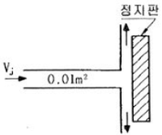
- 10 kN
- 10 N
- 100 kN
- 1000 N
(정답률: 52%)
48. 동쪽을 x축 (+)방향, 북쪽을 y축 (+)방향으로 하는 2차원 직각 좌표계에서 2m/s의 일정한 속도로 불어오는 남동풍에 대응하는 속도 포텐셜은? (단, 속도포텐셜 ø는
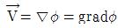
로 정의된다.)
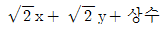
- 2x – 2y + 상수
- 2x + 2y + 상수
(정답률: 19%)
49. 바람에 수직하게 놓인 지름 40cm의 원판(disk)이 받는 항력은 0.4N이었다. 공기 밀도가 1.2kg/m3이고 항력계수가 1.1이라면 풍속은 몇 m/s인가?
- 0.8
- 1.1
- 1.6
- 2.2
(정답률: 54%)
50. 점성 계수가 μ=0.098N∙s/m2인 유체가 평판 위를 u=750y-2.5×10-6y3m/s의 속도분포로 흐를 때 벽면에서의 전단 응력은 몇 N/m2인가? (단, y는 벽면으로부터 m 단위로 잰 수직거리이다.)
- 7.35
- 73.5
- 735
- 0.735
(정답률: 49%)
51. 그림과 같은 수문(ABC)에서 A점은 한지로 연결되어 있다. 수문을 그림과 같은 닫은 상태로 유지하기 위해 필요한 힘 F는 몇 kN인가?
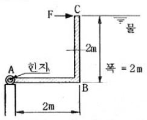
- 39.2
- 52.3
- 58.8
- 78.4
(정답률: 32%)
52. 비중이 0.9인 원유를 1.0m3/min의 유량으로 직경이 150mm인 원형관으로 수송하고자 한다. 100km를 수송하기 위해 필요한 동력은 몇 kW인가? (단, 관마찰계수는 0.02이다.)
- 0.251
- 1.72
- 25.8
- 89.0
(정답률: 40%)
53. 경계층에서 유동박리 현상이 발생하기 제일 어려운 조건은 어느 것인가?
- 역압력 구배가 존재할 때
- 유동 방향으로 단면이 확대될 때
- 유체가 감속될 때
- 순압력 구배가 존재할 때
(정답률: 34%)
54. 수두 차를 읽어 관내 유체의 속도를 측정할 때 역 U자관(inverted U tube) 액주계가 사용되었다면 그 이유는?
- 게측 유체의 비중이 작기 때문에
- 설치가 간편하기 때문에
- 이물질 제거가 쉽기 때문에
- 관찰하기 쉽기 때문에
(정답률: 50%)
55. 공기로 채워진 0.189m3들이 오일 드럼통을 사용하여 잠수부가 해저 바닥으로부터 오래된 배의 닻을 끌어올리려 한다. 바닷물 속에서 닻을 들어 올리는데 필요한 힘은 1780N이고, 공기 중에서 빈 드럼통을 들어 올리는데 필요한 힘은 222N이다. 공기로 채워진 드럼통을 닻에 연결할 때 잠수부가 이 닻을 끌어올리는 데 필요한 최소 힘은 몇 N인가? (단, 바닷물의 비중은 1.025이다.)
- 97.5
- 99.5
- 101.5
- 103.5
(정답률: 45%)
56. 그림과 같이 입구속도 Uo의 비압축성 유체의 유동이 평판 위를 지나 출구에서의 속도분포가 가 된다. 검사체적을 ABCD로 취한다면 단면 CD를 통과하는 유량은? (단, 그림에서 검사체적의 두께는 δ, 평판의 폭은 b이다.)
- Uobδ
(정답률: 29%)
57. 안지름이 2cm이고 길이 100m인 파이프에 유체가 평균 속도 6.25cm/s로 흐른다. 파이프 입구에서 압력은 출구 압력보다 약 몇 Pa 더 높은가? (단, 파이프는 수평으로 놓여있고, 유체의 밀도는 800kg/m3, 점성계수는 2x10-3kg/m∙s다.)
- 611
- 764
- 1000
- 1243
(정답률: 42%)
58. 지름이 0.2m, 길이 10m인 파이프에 기름(비중 0.8, 동점성 계수 1.2x10-4m2/s)이 0.0188m3/s의 유량으로 흐른다. 마찰손실 수두는 몇 m인가?
- 0.023
- 0.029
- 0.⑤
- 0.⑤9
(정답률: 55%)
59. 양쪽 끝이 열린 가는 유리관을 수은이 들어있는 그릇에 수직으로 세울 때 생겨나는 현상에 대한 설명으로 틀린 것은?
- 표면장력 때문에 생기는 현상으로 모세관현상이라 부른다.
- 접촉각이 둔각이기 때문에 유리관 내 수은면이 내려간다.
- 수은의 응집력이 수은과 유리 사이의 부착력보다 크기 때문에 유리관 내 수은면이 내려간다.
- 유리관의 단면이 타우너형으로 바뀌어도 수은면이 내려가는 높이에는 변화가 없다.
(정답률: 20%)
60. 유효 낙차가 100m인 댐의 유량이 10m3/s일 때 효율 90%인 수력터빈의 출력은 몇 MW인가?
- 8.83
- 9.81
- 10.0
- 10.9
(정답률: 38%)
4과목: 기계재료 및 유압기기
61. 강의 열처리 방법 중 표면경화법에 속하는 것은?
- 담금질
- 불림
- 마템퍼
- 침탄법
(정답률: 78%)
62. Sub – zero 처리는 다음 중 어느 것을 위해서 행하는가?
- 오스테나이트 → 펄라이트화
- 펄라이트 → 마텐자이트화
- 잔류 오스테나이트 → 마텐자이트화
- 트루스타이트 → 마텐자이트화
(정답률: 84%)
63. 다음 금속 중에서 용융점이 가장 높은 것은?
- V
- W
- Co
- Mo
(정답률: 62%)
64. 배빗메탈(babbit metal)에 관한 설명으로 옳은 것은?
- Sn – Sb – Cu계 합금으로서 베어링재료로 사용된다.
- Al – Cu – Mg계 합금으로서 상온시효경화 시키면 기계적 성질이 개선된다.
- Cu – Ni – Si계 합금으로서 도전율이 좋으므로 강력도전 재료로 이용된다.
- Zn – Cu – Ti계 합금으로서 강도가 현저히 개선된 경화형 합금이다.
(정답률: 75%)
65. 황동의 종류를 설명한 것이다. 틀린 것은?
- 톰백 : Zn 8~20%로 색깔이 황금색에 가깝고 냉간가공이 쉬워 단추, 금박, 금모조품, 건축용 금속에 주로 사용
- 카트리지메탈 : 전구의 소켓, 탄피 같은 복잡한 가공물에 적합
- 하이브래스 : Zn 30%로 7∙3황동과 용도가 거의 비슷하며 냉간가공 하기 전에 400~500℃의 풀림으로서 β를 소멸시킬 필요가 있다.
- 문쯔메탈 : Zn 35~45%로 Zn의 양이 많으므로 가격이 고가이나 가공하기 어렵고 판재, 봉재, 선재, 보울트, 너트, 밸브 등에 사용
(정답률: 56%)
66. 백주철을 열처리로에서 가열한 후 탈탄시켜, 인성을 증가시킨 주철은?
- 가단주철
- 회주철
- 보통주철
- 구상흑연주철
(정답률: 77%)
67. 전기 전도도가 좋은 순으로 나열된 것은?
- Cu ＞ Al ＞ Ag
- Ag ＞ Al ＞ Cu
- Fe ＞ Ag ＞ Al
- Ag ＞ Cu ＞ Al
(정답률: 78%)
68. 다음 중 초경합금 공구강을 구성하는 탄화물이 아닌 것은?
- WC
- Tic
- TaC
- Fe3C
(정답률: 57%)
69. 탄소강을 담금질할 때 재료의 내부와 외부에 담금질 효과가 서로 다르게 나타나는 현상을 무엇이라고 하는가?
- 노치효과
- 담금질효과
- 질량효과
- 비중효과
(정답률: 64%)
70. 노안에서 페로실리콘, 알루미늄 등의 탈산제로 충분히 탈산 시킨 강은?
- 림드강
- 킬드강
- 세미킬드강
- 캡드강
(정답률: 80%)
71. 다음 중 방향제어밸브에 속하는 것은?
- 릴리프 밸브
- 시퀀스 밸브
- 체크 밸브
- 교축 밸브
(정답률: 61%)
72. (보기)와 같은 유압∙공기압 도면기호는 무슨 기호인가?
- 정용량형 유압 펌프 모터
- 가변 용량형 유압 펌프 모터
- 공기압 모터
- 진공 펌프
(정답률: 73%)
73. 보기 유압회로도의 명칭으로 다음 중 가장 적합한 것은?
- 미터 인 회로
- 카운터 밸런스 회로
- 미터 아웃 회로
- 시퀀스 밸브의 응용회로
(정답률: 60%)
74. 엑추에이터의 배출 쪽 관로 내의 흐름을 제어함으로써 속도를 제어하는 회로는?
- 방향 제어회로
- 미터 인 회로
- 미터 아웃 회로
- 압력 제어회로
(정답률: 75%)
75. 열 교환기에서 유온을 항상 적당한 온도로 유지하기 위하여 사용되는 오일쿨러(oil cooler)의 종류 중 수냉식의 특징 설명으로 틀린 것은?
- 냉각수 설비가 필요 없다.
- 소형으로 냉각 능력이 크다.
- 경음이 적다.
- 자동유로 조정이 가능하다.
(정답률: 70%)
76. 유압 실린더의 주요 구성 요소가 아닌 것은?
- 스풀
- 피스톤
- 피스톤 로드
- 실린더 튜브
(정답률: 55%)
77. 다음 중 유압 작동유의 구비조건으로 적당치 않은 것은?
- 윤활성이 좋으며 적당한 점도를 갖고 있을 것
- 녹이나 부식의 발생을 방지할 것
- 동력전달의 확실성이 요구되기 때문에 압축성일 것
- 장시간 사용하여도 화학적으로 안정되어 있을 것
(정답률: 72%)
78. 다음 중 유압 작동유의 점도가 너무 높을 경우 나타나는 현상으로 가장 적합한 것은?
- 내부 누설 및 외부 누설
- 동력 손실의 증대
- 마찰부분의 마모 증대
- 펌프 효율 저하에 따르는 온도 상승
(정답률: 57%)
79. 다음 중 채터링 현상에 대한 설명으로 가장 적합한 것은?
- 유량제어밸브의 개폐가 연속적으로 반복되어 심한 진동에 의한 밸브 포트에서의 누설 현상
- 유동하고 있는 액체의 압력이 국부적으로 저하되어 증기나 함유 기체를 포함하는 기체가 발생하는 현상
- 강압밸브, 체크밸브, 릴리프밸브 등에서 밸브시트를 두드려 비교적 높은 소음을 내는 자려 진동 현상
- 슬라이드 밸브 등에서 밸브가 중립점에서 조금 변위하여 포트가 열릴 때, 발생하는 압력증가 현상
(정답률: 74%)
80. 다음 중 일반적인 층류의 특징 설명으로 틀린 것은?
- 레이놀즈 수가 4000 이상일 때 발생한다.
- 유체의 동점도가 클 때 발생한다.
- 유속이 비교적 작을 때 발생한다.
- 배관의 직경에 영향을 받는다.
(정답률: 72%)
5과목: 기계제작법 및 기계동력학
81. 단조작업에서 해머의 무게가 10kgf, 타격순간의 해머의 속도가 10m/s, 타격에 의한 단조 재료 높이의 변화량이 3mm, 중력가속도가 9.8m/s2, 해머의 효율은 0.9이다. 이 때 단조 에너지는 몇 kgf∙m인가?
- 약 40
- 약 43
- 약 46
- 약 50
(정답률: 33%)
82. 다음 중 박스 지그(box jig)가 가장 많이 사용되는 경우는?
- 밀링머신에서 헬리컬기어를 가공하는 경우
- 선반에서 테이퍼를 가공하는 경우
- 드릴링에서 다량생산하는 경우
- 내면 연삭가공을 하는 경우
(정답률: 45%)
83. 쇳물을 정밀 금속 주형에 고속, 고압으로 주입하여 표면이 우수한 주물을 얻는 구조 방법은?
- 셀몰드 주조
- 칠드 주조
- 다이캐스팅 주조
- 인베스트먼트 주조
(정답률: 50%)
84. 드릴의 홈을 따라서 만들어진 좁은 날이며, 드릴을 안내하는 역할을 하는 것은?
- 탱(tang)
- 마진(margin)
- 생크(shank)
- 윗면 경사각(rake angle)
(정답률: 29%)
85. 버니어 캘리퍼스는 일반적으로 아들자의 한 눈금이 어미자의 (n-1) 눈금을 n 등분한 것이다. 어미자의 한 눈금 간격이 A라고 하면 아들자로 읽을 수 있는 최소 측정값은?
- nA
- A/n
- nA/n-1
- n-1/nA
(정답률: 52%)
86. 테르밋 용접(thermit welding)이란?
- 원자수소의 발열을 이용한 용접
- 전기용접과 가스용접법을 결합한 용접
- 산화철과 알루미늄의 반응열을 이용한 용접
- 액체산소를 이용한 가스용접법의 일종
(정답률: 49%)
87. 지름 100m의 소재를 드로잉하여 지름 70mm의 원통을 만들었다. 이 때 드로잉률은 얼마인가? 또 지름 70mm의 용기를 재드로잉률 0.8로서 재드로잉 하면 용기의 지름은 얼마인가?
- 드로잉률은 80% 이고, 재드로잉한 지름은 56mm이다.
- 드로잉률은 70% 이고, 재드로잉한 지름은 56mm이다.
- 드로잉률은 80% 이고, 재드로잉한 지름은 49mm이다.
- 드로잉률은 70% 이고, 재드로잉한 지름은 49mm이다.
(정답률: 68%)
88. 연삭 숫돌의 3요소에 해당 되지 않는 것은?
- 연삭입자
- 결합제
- 기공
- 조직
(정답률: 34%)
89. NC 서보기구(servo system)의 형식을 피드백장치의 유무와 검출위치에 따라 분류할 때 그 형식이 아닌 것은?
- 반개방 회로 방식
- 개방 회로 방식
- 반폐쇄 회로 방식
- 폐쇄 회로 방식
(정답률: 36%)
90. 표면경화법에서 금속침투법 중 아연을 침투시키는 것은?
- 칼로라이징
- 세라다이징
- 크로마이징
- 실리코나이징
(정답률: 57%)
91. 주기가 1초인 단진자의 길이는 몇 cm인가?
- 16.8
- 20.8
- 24.8
- 28.8
(정답률: 41%)
92. 운동 방정식이 x(t)=13sin3πt 로 주어질 때 이 운동의 주기는 얼마인가?
- 2/3
- 3/2
- 3π
- 13
(정답률: 43%)
93. 길이가 1.0m이고 질량이 3kg인 가느다란 막대의 무게 중심에 대한 관성모멘트는 몇 kg∙m2 인가?
- 0.20
- 0.25
- 0.3
- 0.40
(정답률: 58%)
94. 다음 그림에 보인 계의 운동방정식으로 맞는 것은? (단, 미소진동이라 가정(sinθ≃θ)하고 막대는 강체로 가정하며 질량은 무시한다.)
- mL2θ+(mgL+ka2)θ=0
- mL2θ+ka2θ=0
- mL2θ+(ka2-mgL)θ=0
- mL2θ+(ka2-2mgL)θ=0
(정답률: 24%)
95. 2x+3x+8x=0 으로 주어지는 진동계에서 초기조건이 x(0)=0, x(0)=3.7로 주어질 때, 이 진동계의 해를 x=x0e-atcos(wdt-ø)의 형식으로 표시하면?
(정답률: 16%)
96. 중량이 42N, 스프링상수가 28N/cm, 감쇠계수(c)가 0.3N∙s/cm 일 때 이 계의 감쇠비()는 얼마인가?
- 0.323
- 0.215
- 0.137
- 0.174
(정답률: 49%)
97. 지상에서 공을 v0의 속도로 수직으로 던졌다. 공기저항을 무시할 때, 공기 다시 떨어지기까지 걸린 시간은?
(정답률: 38%)
98. 무게 10kN의 구를 위치 A에서 정지상태로부터 놓았을 때, 구가 위치 B를 통과할 때의 속도는 약 몇 cm/s 인가?
- 102
- 1⑤
- 107
- 110
(정답률: 52%)
99. 그림과 같이 연결봉 질량 m, 진자 추 질량 M으로 단순화된 시스템에서 운동 에너지를 나타내는 식은? (단, 피봇에서 진자 추 까지의 길이는 L 이며 진자 추는 질점으로 가정한다.)
(정답률: 37%)
100. 그림과 같은 진동계의 정적 처짐(static deflection)을 측정하니 0.075m 이고 물체 B를 제거한 후의 정적 처짐을 측정하니 0.⑤m 이었다. 물체 B의 질량이 3kg일 때 물체 A의 질량은 몇 kg 인가?
- 9
- 6
- 3
- 1.5
(정답률: 40%)
F = AEΔL/L
여기서, A는 단면적, E는 탄성계수, ΔL은 길이 변화량, L은 원래 길이이다.
문제에서는 길이 변화량이 0이 되도록 하는 힘을 구하고 있으므로, 위 식을 다음과 같이 변형할 수 있다.
ΔL/L = F/(AE)
이제, 열팽창계수(α)와 온도 변화량(ΔT) 사이의 관계는 다음과 같다.
ΔL/L = αΔT
따라서, 위의 두 식을 결합하면 다음과 같다.
α = F/(AEΔT)
여기서, F = 160kN, A = (4cm)^2 = 16cm^2, E = 200 GPa = 200 × 10^9 N/m^2, ΔT = 40℃ 이므로,
α = 160 × 10^3 N / (16cm^2 × 200 × 10^9 N/m^2 × 40℃) = 12.5 × 10^-6 /℃
따라서, 정답은 "12.5×10^-6" 이다.